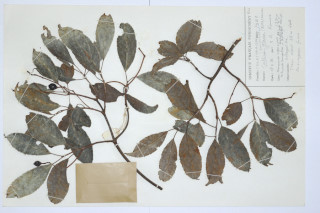
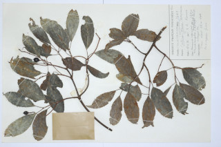

Large buttressed tree, up to 40 m tall.
ಆನಿಕೆಗಳ ನ್ನುಳ್ಳ 40 ಮೀ ಎತ್ತರದವರೆಗೆ ಬೆಳೆಯುವ ದೊಡ್ಡ ಗಾತ್ರದ ಮರಗಳು.
40 മീറ്റര് വരെ ഉയരത്തില് വളരുന്ന, വപ്രമൂലത്തോടുകൂടിയ വന്മരങ്ങള്.
பெரிய தாங்கு வேர் (பட்ரஸ்டு) அமைப்புடன் மரம் 40 மீ. உயரம் வரை வளரக்கூடியது
Trunk hollow in very old trees; bark grey, smooth; blaze pink.
ಅತಿವಯಸ್ಸಾದ ಮರಗಳಲ್ಲಿ ಕಾಂಡ ಟೊಳ್ಳಾಗಿರುತ್ತದೆ;ತೊಗಟೆ ಬೂದುಬಣ್ಣ ಹೊಂದಿದ್ದು ನಯವಾಗಿರುತ್ತದೆ;ಕಚ್ಚು ಮಾಡಿದ ಜಾಗ ನಸುಗೆಂಪು.
ഏറെപ്രായമായ മരങ്ങളില് തായ്ത്തടി പൊളളയായിരിക്കും; മിനുസമാര്ന്ന, നരച്ച നിറത്തിലുളള പുറംതൊലി; വെട്ടുപാടിന് പിങ്ക് നിറം.
வயதான மரங்களின் நடுத்தண்டில் ஓட்டை காணப்படும்; மரத்தின் பட்டை சாம்பல் நிறம், வழுவழுப்பானது; உள்பட்டை பிங்க் நிறமுடையது.
Branchlets terete, glabrous.
ಕಿರುಕೊಂಬೆಗಳು ದುಂಡಾಗಿದ್ದು ರೋಮರಹಿತವಾಗಿರುತ್ತವೆ.
ഉപശാഖകള് ഉരുതും, അരോമിലവും.
சிறிய நுனிக்கிளைகள் குறுக்குவெட்டுத் தோற்றத்தில் வளையமானது, உரோமங்களற்றது.
Watery exudation from the cut end of the bark.
ಕತ್ತರಿಸಿದ ಕೊನೆಗಳಿಂದ ಜಲರೂಪಿ ದ್ರವ ಹೊರಹೊಮ್ಮುತ್ತದೆ.
പുറംതൊലിയിലെ മുറിപ്പാടില് നിന്നും ജലമയമായ സ്രവം വരുന്നു.
தண்ணீர் போன்ற சாறு வெட்டுபட்ட பட்டையிலிருந்து தோன்றும்
Leaves simple, opposite or subopposite; petiole up to 1.5 cm long, canaliculate; lamina 7-8 x 2.5-3.5 cm, elliptic, apex acuminate and twisted, base acute to cuneate, margins crenate, glabrous; midrib raised above; secondary_nerves 7-9 pairs; tertiary_nerves reticulate.
ಎಲೆಗಳು ಸರಳವಾಗಿದ್ದು, ಅಭಿಮುಖಿ ಅಥವಾ ಉಪಅಭಿಮುಖಿಗಳಾಗಿತ್ತವೆ.;ಎಲೆತೊಟ್ಟುಗಳ ಉದ್ದ 1.5 ಸೆಂ.ಮೀ ಇದ್ದು ಕಾಲುವೆಗೆರೆ ಸಮೇತವಾಗಿರುತ್ತವೆ;;ಪತ್ರಗಳು 7-8 X 2.5-3.5 ಸೆಂ.ಮೀ ಗಾತ್ರವಿದ್ದು,ಅಂಡವೃತ್ತಾಕೃತಿಯಲ್ಲಿಅಥವಾ ಕ್ರಮೇಣ ಚೂಪಾಗುವ ಮಾದರಿಯ ತುದಿ ಹೊಂದಿದ್ದು ತಿರುಚಿಕೊಂಡಿ-ರುತ್ತದೆ,ಎಲೆ ಬುಡ ಚೂಪಾದ ಮಾದರಿಯಿಂದ ಬೆಣೆಯಾಕಾರ-ದವರೆವಿಗೂ ಇರುತ್ತದೆ,ಪತ್ರದ ಮೇಲ್ಮೈ ರೋಮರಹಿತ;ಮಧ್ಯನಾಳ ಪತ್ರದ ಮೇಲ್ಭಾಗದಲ್ಲಿ ಉಬ್ಬಿರುತ್ತದೆ; ಎಲೆಯ ಅಂಚು ಗುಂಡೇಣಿನ ಹಲ್ಲುಗಳನ್ನು ಹೊಂದಿರುತ್ತದೆ;ಎರಡನೇ ದರ್ಜೆಯ ನಾಳಗಳು 7 ರಿಂದ 9 ಜೋಡಿಗಳಿದ್ದು ಮೂರನೇ ದರ್ಜೆಯ ನಾಳಗಳು ಜಾಲಬಂಧ ನಾಳವಿನ್ಯಾಸದವು.
സമ്മുഖമോ ഉപസമ്മുഖമോ ആയ ലഘുപത്രങ്ങള്; ഇലഞെട്ടിന് 1.5 സെ.മീ വരെ നീളം, ചാലോട് കൂടിയതാണ്; പത്രഫലകത്തിന് 7 സെ.മീ മുതല് 8 സെ.മീ വരെ നീളവും 2.5 സെ.മീ മുതല് 3.5 സെ.മീ വരെ വീതിയും, ദീര്ഘവൃത്താകാരം, അഗ്രം ചുരു വാലോട്കൂടിയതും, പത്രാധാരം കൂര്ത്തതോ ആപ്പാകൃതിയിലോ ആണ്, അരോമിലം; മുഖ്യസിര മുകളില് ഉയര്ന്നതാണ്; ദ്വിതീയ ഞരമ്പുകള് 7 മുതല് 9 വരെ ജോഡികള്; ജാലികതീര്ക്കുന്ന ത്രിതീയ ഞരമ്പുകള്.
இலைகள் தனித்தவை, எதிரானது அல்லது சிறிது எதிரானது; இலைக்காம்பு 1.5 செ.மீ. நீளமானது, குறுக்குவெட்டுத் தோற்றத்தில் கேனாலிகுலேட்; இலை அலகு 7-8 X 2.5-3.5 செ.மீ., நீள்வட்டம், அலகின் நுனி அதிக்கூரியது மற்றும் திருகியது, அலகின் தளம் கூரியது முதல் ஆப்பு வடிவமுடையது, அலகின் விளிம்பு பிறை போன்ற பற்களுடையது, உரோமங்களற்றது; மையநரம்பு மேற்புறத்தில் அலகின் பரப்பைவிட உயர்ந்து இருக்கும்; இரண்டாம் நிலை நரம்புகள் 7-9 ஜோடிகள்; மூன்றாம் நிலை நரம்புகள் வலைப்பின்னல் போன்றது.
Inflorescence cymes; flower greenish white, petals spathulate.
ಪುಷ್ಪಮಂಜರಿ ನೀಳಛತ್ರ ಮಾದರಿಯವು; ಹೂಗಳು ಹಸಿರು ಛಾಯೆಯುಳ್ಳ ಶ್ವೇತ ಬಣ್ಣ ಹೊಂದಿದ್ದು ಚಮಚದಾಕಾರದ ಪುಷ್ಪದಳಗಳನ್ನು ಹೊಂದಿರುತ್ತವೆ.
പൂങ്കുല സൈമുകളാണ്; പച്ചകലര്ന്ന വെളുത്ത പൂക്കള്, കോരിക രൂപത്തിലുളള ദളങ്ങള്
சைம் மஞ்சரி; மலர்கள் பச்சை கலந்த வெள்ளை நிறம், இதழ்கள் ஸ்ஃபாத்துலேட் (கரண்டி வடிவமுடையது).
Drupe, globose, apiculate, 2-seeded.
ಡ್ರೂಪುಗಳು ಗೋಳಾಕರದಲ್ಲಿದ್ದು ಎರಡು ಬೀಜಗಳನ್ನು ಹೊಂದಿರುತ್ತವೆ.
2 വിത്തുകളുളളതും, അറ്റത്തൊരു മുനയോടുകൂടിയതുമായ ഗോളാകാര ആഭകം.
உள்ளோட்டுத்தசைகனி (ட்ரூப்), உருண்டையானது, ஏபிகுலேட், இரண்டு விதை கொண்டது.
 
